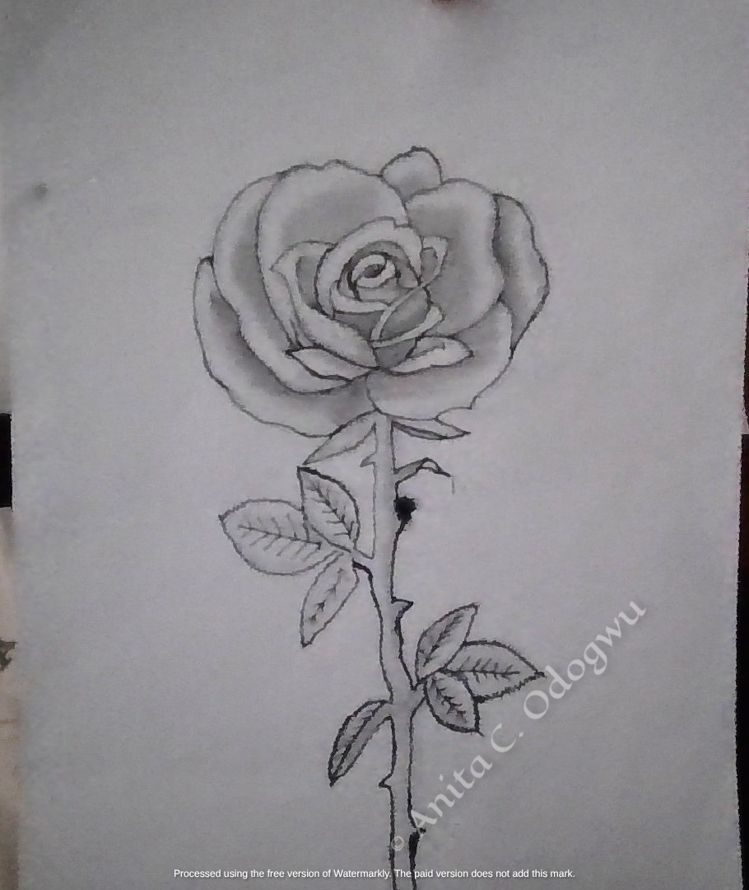
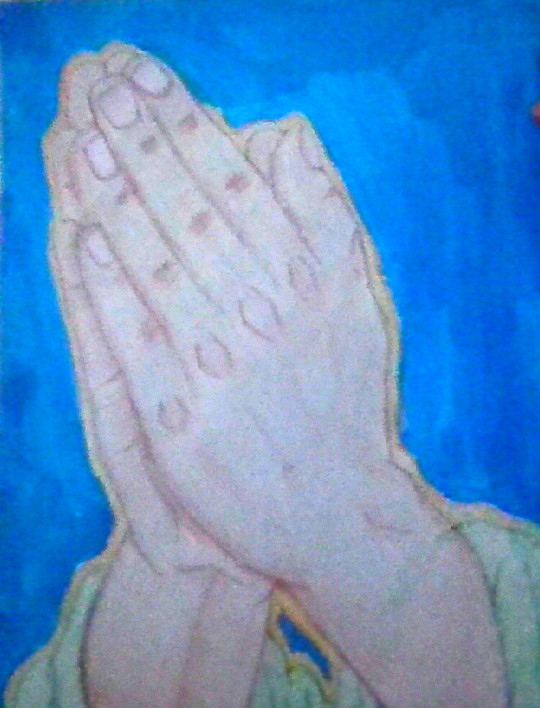

My Artwork Portfolio

Audrey Hepburn
Graphite and Blending Stump on Paper

Chadwick Boseman
Graphite with High-Contrast Studio Lighting

The Rose
Graphite Shading with Natural Textures
Martin Luther King Jr.
Graphite and Blending Stump Portrait

Cherries
Oil Pencil Blending on Paper

Praying Hands
Oil Pencil on Paper

Surreal Hand
Graphite and Fine Shading with Conceptual Detail

Mercy Chinwo
Graphite and Fine Shading with Embellished Details
← Back to Poetry Collection